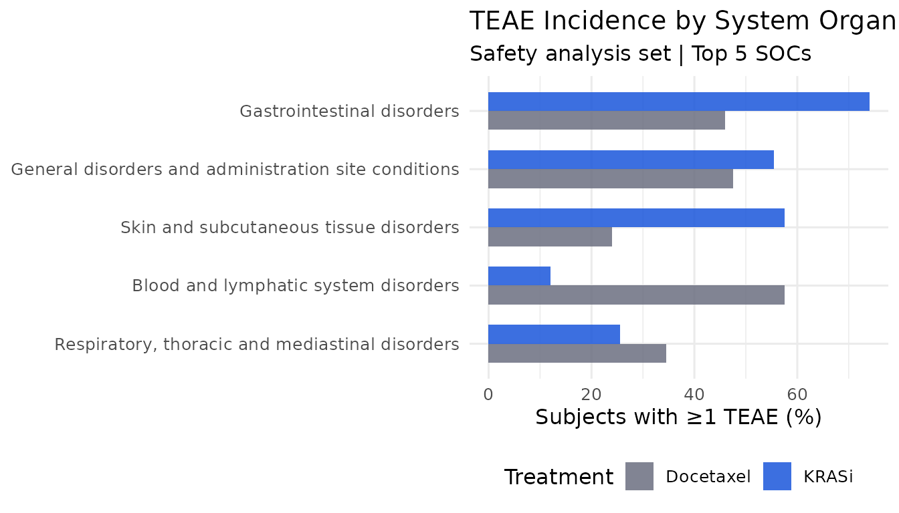
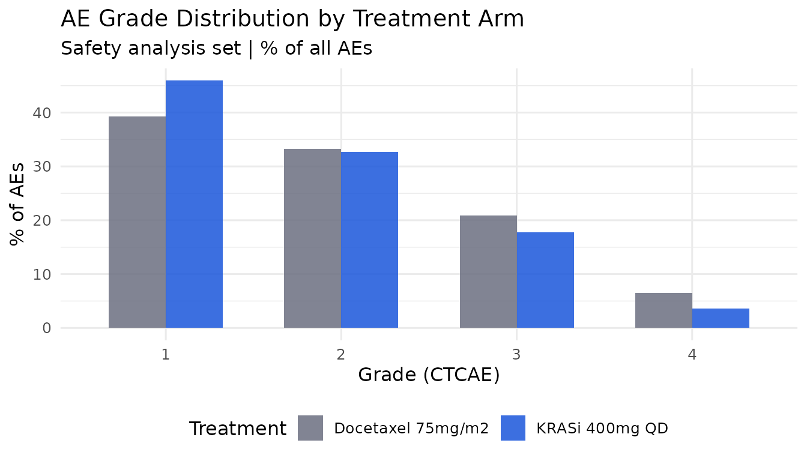

Audit-ready oncology safety monitoring with regulog
Ndoh Penn
2026-06-26
Source:vignettes/articles/regulog-oncology.Rmd
regulog-oncology.RmdOverview
Oncology safety monitoring is one of the highest-scrutiny activities in clinical development. Every data cut decision, every SAE narrative, every judgment about treatment-relatedness, and every action taken in response to a safety signal must be traceable, documented, and available for inspection.
In practice, safety monitoring produces a trail of emails, meeting
minutes, and retrospective notes that is difficult to assemble and
impossible to cryptographically verify. regulog replaces
this with a hash-chained audit trail that is built as the analysis runs
— not reconstructed after the fact.
This article walks through a complete safety monitoring workflow for a simulated Phase III non-small cell lung cancer (NSCLC) trial, covering TEAE summaries, Grade 3+ adverse event analysis, SAE flagging, safety signal documentation, dual medical/statistical sign-off, and submission-ready audit trail export.
Setup
#>
#> Attaching package: 'dplyr'#> The following objects are masked from 'package:stats':
#>
#> filter, lag#> The following objects are masked from 'package:base':
#>
#> intersect, setdiff, setequal, unionSimulate the safety datasets
We simulate CDISC ADaM-structured ADSL and ADAE datasets for a Phase III trial of a novel KRAS G12C inhibitor versus docetaxel in second-line NSCLC. 400 randomised patients, 200 per arm.
n_per_arm <- 200L
n_total <- n_per_arm * 2L
# ── ADSL ──────────────────────────────────────────────────────────────────
adsl <- data.frame(
STUDYID = "NSCLC-KRASi-301",
USUBJID = sprintf("KRASi301-%04d", seq_len(n_total)),
TRT01P = rep(c("KRASi 400mg QD", "Docetaxel 75mg/m2"), each = n_per_arm),
TRT01PN = rep(c(1L, 2L), each = n_per_arm),
AGE = round(rnorm(n_total, mean = 63, sd = 9)),
SEX = sample(c("M", "F"), n_total, replace = TRUE, prob = c(0.52, 0.48)),
ITTFL = "Y",
SAFFL = "Y",
EOSSTT = sample(c("COMPLETED", "DISCONTINUED", "ONGOING"),
n_total,
replace = TRUE, prob = c(0.35, 0.45, 0.20)
),
stringsAsFactors = FALSE
)
# ── Adverse event system organ classes ────────────────────────────────────
socs <- c(
"Gastrointestinal disorders",
"General disorders and administration site conditions",
"Skin and subcutaneous tissue disorders",
"Respiratory, thoracic and mediastinal disorders",
"Metabolism and nutrition disorders",
"Blood and lymphatic system disorders",
"Nervous system disorders",
"Infections and infestations"
)
ae_terms <- list(
"Gastrointestinal disorders" = c("Nausea", "Diarrhoea", "Vomiting", "Constipation"),
"General disorders and administration site conditions" = c("Fatigue", "Pyrexia", "Oedema peripheral"),
"Skin and subcutaneous tissue disorders" = c("Rash", "Pruritus", "Dry skin"),
"Respiratory, thoracic and mediastinal disorders" = c("Cough", "Dyspnoea", "Pneumonitis"),
"Metabolism and nutrition disorders" = c("Decreased appetite", "Hyponatraemia", "Hyperglycaemia"),
"Blood and lymphatic system disorders" = c("Anaemia", "Neutropenia", "Thrombocytopenia"),
"Nervous system disorders" = c("Headache", "Peripheral neuropathy", "Dizziness"),
"Infections and infestations" = c("Upper respiratory tract infection", "Pneumonia")
)
# Simulate AEs — KRASi has more GI/skin; docetaxel has more haematologic
set.seed(2026)
adae_list <- lapply(seq_len(n_total), function(i) {
subj <- adsl$USUBJID[i]
trt <- adsl$TRT01P[i]
is_krasi <- trt == "KRASi 400mg QD"
n_ae <- rpois(1, lambda = if (is_krasi) 4.2 else 3.8)
if (n_ae == 0L) {
return(NULL)
}
soc_weights <- if (is_krasi) {
c(0.30, 0.18, 0.20, 0.08, 0.08, 0.04, 0.06, 0.06)
} else {
c(0.18, 0.16, 0.06, 0.10, 0.10, 0.22, 0.08, 0.10)
}
sampled_socs <- sample(socs, n_ae, replace = TRUE, prob = soc_weights)
aes <- do.call(rbind, lapply(seq_along(sampled_socs), function(j) {
soc <- sampled_socs[j]
term <- sample(ae_terms[[soc]], 1L)
grade_probs <- if (is_krasi && soc == "Blood and lymphatic system disorders") {
c(0.4, 0.35, 0.20, 0.05)
} else if (!is_krasi && soc == "Blood and lymphatic system disorders") {
c(0.2, 0.30, 0.35, 0.15)
} else {
c(0.45, 0.35, 0.16, 0.04)
}
grade <- sample(1:4, 1L, prob = grade_probs)
data.frame(
STUDYID = "NSCLC-KRASi-301",
USUBJID = subj,
TRT01P = trt,
AEBODSYS = soc,
AEDECOD = term,
AESEV = c("MILD", "MODERATE", "SEVERE", "LIFE-THREATENING")[grade],
AETOXGR = as.character(grade),
AESER = ifelse(grade >= 3 & runif(1) < 0.35, "Y", "N"),
AEREL = sample(c("RELATED", "NOT RELATED", "POSSIBLY RELATED"),
1L,
prob = c(0.5, 0.25, 0.25)
),
AEACN = ifelse(grade >= 3,
sample(c("DOSE REDUCED", "DRUG WITHDRAWN", "DOSE NOT CHANGED"),
1L,
prob = c(0.4, 0.3, 0.3)
),
"DOSE NOT CHANGED"
),
AESTDY = sample(1:365, 1L),
stringsAsFactors = FALSE
)
}))
aes
})
adae <- do.call(rbind, Filter(Negate(is.null), adae_list))
adae <- adae[order(adae$USUBJID, adae$AESTDY), ]
rownames(adae) <- NULL
cat(sprintf(
"ADSL: %d subjects | ADAE: %d AEs across %d subjects\n",
nrow(adsl),
nrow(adae),
n_distinct(adae$USUBJID)
))#> ADSL: 400 subjects | ADAE: 1597 AEs across 394 subjects
# Write to disk so rl_read()/with_log() have real files to read
tmp_adsl <- tempfile(fileext = ".csv")
tmp_adae <- tempfile(fileext = ".csv")
write.csv(adsl, tmp_adsl, row.names = FALSE)
write.csv(adae, tmp_adae, row.names = FALSE)Open the safety monitoring session
regulog_init() creates the session and writes the
genesis record immediately. The data cut and protocol context are
captured as the first logged note, since they are study metadata rather
than session configuration.
log <- regulog_init(
app = "NSCLC-KRASi-301-safety-summary",
version = "1.0.0",
user = "jsmith",
path = file.path(tempdir(), "audit_KRASi301_safety_v1.rlog")
)
log_note(
log,
"Scheduled safety data cut for Safety Monitoring Committee (SMC) review.
Protocol: NSCLC-KRASi-301. Data cut: 2026-05-15. Analysis set: safety
analysis set (SAFFL = Y). SMC meeting: 2026-07-10. Regulatory basis:
21 CFR Part 11, ICH E6(R2)."
)#> regulog: note logged
log#> <regulog>
#> App: NSCLC-KRASi-301-safety-summary v1.0.0
#> User: jsmith
#> Entries: 1
#> Path: /tmp/Rtmp6e6Xcz/audit_KRASi301_safety_v1.rlogLog data access and the data cut
Loading ADSL and ADAE is logged automatically with
with_log() — row and column counts are captured at the
moment of read, not reconstructed afterwards.
with_log(log, {
adsl_loaded <- read(read.csv, tmp_adsl)
adae_loaded <- read(read.csv, tmp_adae)
})
# Document the data cut — a critical audit point in any safety review
log_note(
log,
"Data cut date confirmed as 2026-05-15 per DMC charter Section 4.2.
All AEs with onset on or before 2026-05-15 included.
Lock confirmed by DM team (ref: DM-lock-20260518-001)."
)#> regulog: note loggedApply safety analysis population
adsl_saf <- adsl |> filter(SAFFL == "Y")
adae_saf <- adae |> filter(USUBJID %in% adsl_saf$USUBJID)
arm_n <- adsl_saf |> count(TRT01P)
log_action(log,
action = "define_safety_set",
object = "NSCLC-KRASi-301 safety analysis set",
reason = sprintf(
"Applied safety analysis set (SAFFL = Y) per SAP Section 4.1. %s",
paste(sprintf("%s: n = %d", arm_n$TRT01P, arm_n$n), collapse = " | ")
)
)#> regulog: logged action 'define_safety_set' on 'NSCLC-KRASi-301 safety analysis set'TEAE incidence summary
teae_summary <- adae_saf |>
group_by(TRT01P, AEBODSYS) |>
summarise(
n_subjects = n_distinct(USUBJID),
n_events = n(),
.groups = "drop"
) |>
left_join(arm_n, by = "TRT01P") |>
mutate(pct = round(n_subjects / n * 100, 1)) |>
arrange(AEBODSYS, TRT01P)
log_action(log,
action = "compute_teae_incidence",
object = "TEAE incidence table by SOC",
reason = sprintf(
"Computed per SAP Section 6.1. TEAEs reported: %d subjects in KRASi arm (%.1f%%), %d in docetaxel arm (%.1f%%)",
teae_summary$n_subjects[teae_summary$TRT01P == "KRASi 400mg QD"] |> max(),
teae_summary$pct[teae_summary$TRT01P == "KRASi 400mg QD"] |> max(),
teae_summary$n_subjects[teae_summary$TRT01P == "Docetaxel 75mg/m2"] |> max(),
teae_summary$pct[teae_summary$TRT01P == "Docetaxel 75mg/m2"] |> max()
)
)#> regulog: logged action 'compute_teae_incidence' on 'TEAE incidence table by SOC'
top_socs <- teae_summary |>
group_by(AEBODSYS) |>
summarise(total = sum(n_subjects)) |>
slice_max(total, n = 5L) |>
pull(AEBODSYS)
teae_summary |>
filter(AEBODSYS %in% top_socs) |>
select(
SOC = AEBODSYS, Treatment = TRT01P,
`N subjects` = n_subjects, `%` = pct
) |>
knitr::kable(caption = "TEAE incidence by SOC — top 5 (safety analysis set)")| SOC | Treatment | N subjects | % |
|---|---|---|---|
| Blood and lymphatic system disorders | Docetaxel 75mg/m2 | 115 | 57.5 |
| Blood and lymphatic system disorders | KRASi 400mg QD | 24 | 12.0 |
| Gastrointestinal disorders | Docetaxel 75mg/m2 | 92 | 46.0 |
| Gastrointestinal disorders | KRASi 400mg QD | 148 | 74.0 |
| General disorders and administration site conditions | Docetaxel 75mg/m2 | 95 | 47.5 |
| General disorders and administration site conditions | KRASi 400mg QD | 111 | 55.5 |
| Respiratory, thoracic and mediastinal disorders | Docetaxel 75mg/m2 | 69 | 34.5 |
| Respiratory, thoracic and mediastinal disorders | KRASi 400mg QD | 51 | 25.5 |
| Skin and subcutaneous tissue disorders | Docetaxel 75mg/m2 | 48 | 24.0 |
| Skin and subcutaneous tissue disorders | KRASi 400mg QD | 115 | 57.5 |
Grade 3/4 adverse events
g34 <- adae_saf |>
filter(AETOXGR %in% c("3", "4")) |>
group_by(TRT01P, AEBODSYS, AEDECOD, AETOXGR) |>
summarise(n = n_distinct(USUBJID), .groups = "drop") |>
left_join(arm_n |> rename(arm_total = n), by = "TRT01P") |>
mutate(pct = round(n / arm_total * 100, 1)) |>
arrange(desc(n))
log_action(log,
action = "compute_grade34_ae",
object = "Grade 3/4 TEAE table",
reason = sprintf(
"Computed per SAP Section 6.2 and ICH E9. Grade 3/4 AEs: %d events in KRASi arm, %d in docetaxel arm",
nrow(adae_saf[adae_saf$TRT01P == "KRASi 400mg QD" &
adae_saf$AETOXGR %in% c("3", "4"), ]),
nrow(adae_saf[adae_saf$TRT01P == "Docetaxel 75mg/m2" &
adae_saf$AETOXGR %in% c("3", "4"), ])
)
)#> regulog: logged action 'compute_grade34_ae' on 'Grade 3/4 TEAE table'
g34 |>
select(
Treatment = TRT01P, SOC = AEBODSYS,
Term = AEDECOD, Grade = AETOXGR,
`N subjects` = n, `%` = pct
) |>
head(12L) |>
knitr::kable(caption = "Grade 3/4 TEAEs — top 12 (safety analysis set)")| Treatment | SOC | Term | Grade | N subjects | % |
|---|---|---|---|---|---|
| Docetaxel 75mg/m2 | Blood and lymphatic system disorders | Anaemia | 3 | 21 | 10.5 |
| Docetaxel 75mg/m2 | Blood and lymphatic system disorders | Thrombocytopenia | 3 | 19 | 9.5 |
| Docetaxel 75mg/m2 | Blood and lymphatic system disorders | Neutropenia | 3 | 14 | 7.0 |
| KRASi 400mg QD | Gastrointestinal disorders | Constipation | 3 | 14 | 7.0 |
| KRASi 400mg QD | Gastrointestinal disorders | Nausea | 3 | 14 | 7.0 |
| KRASi 400mg QD | General disorders and administration site conditions | Fatigue | 3 | 12 | 6.0 |
| KRASi 400mg QD | Skin and subcutaneous tissue disorders | Rash | 3 | 11 | 5.5 |
| Docetaxel 75mg/m2 | Infections and infestations | Pneumonia | 3 | 10 | 5.0 |
| KRASi 400mg QD | Skin and subcutaneous tissue disorders | Pruritus | 3 | 10 | 5.0 |
| Docetaxel 75mg/m2 | Blood and lymphatic system disorders | Neutropenia | 4 | 9 | 4.5 |
| KRASi 400mg QD | Skin and subcutaneous tissue disorders | Dry skin | 3 | 9 | 4.5 |
| Docetaxel 75mg/m2 | Blood and lymphatic system disorders | Anaemia | 4 | 8 | 4.0 |
Serious adverse events
saes <- adae_saf |>
filter(AESER == "Y") |>
group_by(TRT01P, AEBODSYS, AEDECOD) |>
summarise(n = n_distinct(USUBJID), .groups = "drop") |>
left_join(arm_n |> rename(arm_total = n), by = "TRT01P") |>
mutate(pct = round(n / arm_total * 100, 1)) |>
arrange(desc(n))
n_sae_krasi <- n_distinct(
adae_saf$USUBJID[adae_saf$AESER == "Y" & adae_saf$TRT01P == "KRASi 400mg QD"]
)
n_sae_doce <- n_distinct(
adae_saf$USUBJID[adae_saf$AESER == "Y" & adae_saf$TRT01P == "Docetaxel 75mg/m2"]
)
log_action(log,
action = "compute_sae_summary",
object = "SAE summary table",
reason = sprintf(
"Summarised per SAP Section 6.3. SAEs: %d subjects in KRASi arm (%.1f%%), %d in docetaxel arm (%.1f%%)",
n_sae_krasi,
n_sae_krasi / n_per_arm * 100,
n_sae_doce,
n_sae_doce / n_per_arm * 100
)
)#> regulog: logged action 'compute_sae_summary' on 'SAE summary table'
saes |>
select(Treatment = TRT01P, SOC = AEBODSYS, Term = AEDECOD, `N subjects` = n) |>
head(10L) |>
knitr::kable(caption = "Serious TEAEs (AESER = Y) — top 10")| Treatment | SOC | Term | N subjects |
|---|---|---|---|
| Docetaxel 75mg/m2 | Blood and lymphatic system disorders | Thrombocytopenia | 13 |
| Docetaxel 75mg/m2 | Blood and lymphatic system disorders | Anaemia | 9 |
| Docetaxel 75mg/m2 | Blood and lymphatic system disorders | Neutropenia | 9 |
| KRASi 400mg QD | Gastrointestinal disorders | Nausea | 7 |
| KRASi 400mg QD | Skin and subcutaneous tissue disorders | Pruritus | 7 |
| KRASi 400mg QD | Gastrointestinal disorders | Constipation | 6 |
| Docetaxel 75mg/m2 | Gastrointestinal disorders | Nausea | 5 |
| Docetaxel 75mg/m2 | Infections and infestations | Upper respiratory tract infection | 5 |
| KRASi 400mg QD | Skin and subcutaneous tissue disorders | Rash | 5 |
| Docetaxel 75mg/m2 | General disorders and administration site conditions | Pyrexia | 4 |
Pneumonitis signal review
Pneumonitis is a clinically important immune-mediated AE associated with KRAS inhibitors. We identify cases and document the medical review decision — three separate, individually logged steps that together form a single audit narrative.
pneumonitis <- adae_saf |>
filter(grepl("Pneumonitis", AEDECOD, ignore.case = TRUE))
n_pneu_krasi <- nrow(pneumonitis[pneumonitis$TRT01P == "KRASi 400mg QD", ])
n_pneu_doce <- nrow(pneumonitis[pneumonitis$TRT01P == "Docetaxel 75mg/m2", ])
n_pneu_g3 <- nrow(pneumonitis[pneumonitis$AETOXGR %in% c("3", "4"), ])
log_note(
log,
sprintf(
"Safety signal identified: pneumonitis — %d cases in KRASi arm vs %d in
docetaxel arm. Grade 3/4: %d cases. Flagged for medical monitor review
per Safety Review Plan.",
n_pneu_krasi, n_pneu_doce, n_pneu_g3
)
)#> regulog: note logged
# Log individual Grade 3+ pneumonitis cases
g3_pneu <- pneumonitis |> filter(AETOXGR %in% c("3", "4"))
for (i in seq_len(nrow(g3_pneu))) {
log_note(
log,
sprintf(
"Pneumonitis case — USUBJID %s | Grade %s | Treatment: %s | Action: %s | Related: %s",
g3_pneu$USUBJID[i], g3_pneu$AETOXGR[i],
g3_pneu$TRT01P[i], g3_pneu$AEACN[i], g3_pneu$AEREL[i]
)
)
}#> regulog: note logged
#> regulog: note logged
#> regulog: note logged
#> regulog: note logged
#> regulog: note logged
#> regulog: note logged
# Log medical monitor decision
log_note(
log,
sprintf(
"Medical monitor reviewed all %d pneumonitis cases (ref:
MM-review-20260620-001). Conclusion: incidence consistent with class
effect; benefit-risk remains favourable. Risk mitigation: enhanced
monitoring protocol added to IB (v4.2, dated 2026-06-22). No protocol
amendment required at this time.",
n_pneu_krasi
)
)#> regulog: note logged
pneumonitis |>
select(USUBJID,
Treatment = TRT01P, Term = AEDECOD,
Grade = AETOXGR, Serious = AESER,
Related = AEREL, Action = AEACN
) |>
knitr::kable(caption = "Pneumonitis cases — all grades")| USUBJID | Treatment | Term | Grade | Serious | Related | Action |
|---|---|---|---|---|---|---|
| KRASi301-0032 | KRASi 400mg QD | Pneumonitis | 3 | N | RELATED | DOSE NOT CHANGED |
| KRASi301-0040 | KRASi 400mg QD | Pneumonitis | 2 | N | POSSIBLY RELATED | DOSE NOT CHANGED |
| KRASi301-0044 | KRASi 400mg QD | Pneumonitis | 1 | N | POSSIBLY RELATED | DOSE NOT CHANGED |
| KRASi301-0059 | KRASi 400mg QD | Pneumonitis | 2 | N | NOT RELATED | DOSE NOT CHANGED |
| KRASi301-0067 | KRASi 400mg QD | Pneumonitis | 1 | N | NOT RELATED | DOSE NOT CHANGED |
| KRASi301-0099 | KRASi 400mg QD | Pneumonitis | 1 | N | NOT RELATED | DOSE NOT CHANGED |
| KRASi301-0101 | KRASi 400mg QD | Pneumonitis | 2 | N | RELATED | DOSE NOT CHANGED |
| KRASi301-0151 | KRASi 400mg QD | Pneumonitis | 1 | N | RELATED | DOSE NOT CHANGED |
| KRASi301-0160 | KRASi 400mg QD | Pneumonitis | 1 | N | NOT RELATED | DOSE NOT CHANGED |
| KRASi301-0161 | KRASi 400mg QD | Pneumonitis | 1 | N | RELATED | DOSE NOT CHANGED |
| KRASi301-0170 | KRASi 400mg QD | Pneumonitis | 2 | N | RELATED | DOSE NOT CHANGED |
| KRASi301-0176 | KRASi 400mg QD | Pneumonitis | 4 | N | RELATED | DRUG WITHDRAWN |
| KRASi301-0178 | KRASi 400mg QD | Pneumonitis | 4 | Y | RELATED | DRUG WITHDRAWN |
| KRASi301-0186 | KRASi 400mg QD | Pneumonitis | 1 | N | RELATED | DOSE NOT CHANGED |
| KRASi301-0200 | KRASi 400mg QD | Pneumonitis | 2 | N | RELATED | DOSE NOT CHANGED |
| KRASi301-0206 | Docetaxel 75mg/m2 | Pneumonitis | 1 | N | RELATED | DOSE NOT CHANGED |
| KRASi301-0207 | Docetaxel 75mg/m2 | Pneumonitis | 1 | N | RELATED | DOSE NOT CHANGED |
| KRASi301-0216 | Docetaxel 75mg/m2 | Pneumonitis | 3 | N | POSSIBLY RELATED | DOSE REDUCED |
| KRASi301-0228 | Docetaxel 75mg/m2 | Pneumonitis | 1 | N | POSSIBLY RELATED | DOSE NOT CHANGED |
| KRASi301-0234 | Docetaxel 75mg/m2 | Pneumonitis | 2 | N | RELATED | DOSE NOT CHANGED |
| KRASi301-0239 | Docetaxel 75mg/m2 | Pneumonitis | 1 | N | NOT RELATED | DOSE NOT CHANGED |
| KRASi301-0241 | Docetaxel 75mg/m2 | Pneumonitis | 2 | N | NOT RELATED | DOSE NOT CHANGED |
| KRASi301-0244 | Docetaxel 75mg/m2 | Pneumonitis | 2 | N | NOT RELATED | DOSE NOT CHANGED |
| KRASi301-0247 | Docetaxel 75mg/m2 | Pneumonitis | 2 | N | RELATED | DOSE NOT CHANGED |
| KRASi301-0248 | Docetaxel 75mg/m2 | Pneumonitis | 1 | N | RELATED | DOSE NOT CHANGED |
| KRASi301-0268 | Docetaxel 75mg/m2 | Pneumonitis | 1 | N | NOT RELATED | DOSE NOT CHANGED |
| KRASi301-0272 | Docetaxel 75mg/m2 | Pneumonitis | 2 | N | POSSIBLY RELATED | DOSE NOT CHANGED |
| KRASi301-0279 | Docetaxel 75mg/m2 | Pneumonitis | 2 | N | RELATED | DOSE NOT CHANGED |
| KRASi301-0289 | Docetaxel 75mg/m2 | Pneumonitis | 1 | N | RELATED | DOSE NOT CHANGED |
| KRASi301-0300 | Docetaxel 75mg/m2 | Pneumonitis | 1 | N | RELATED | DOSE NOT CHANGED |
| KRASi301-0305 | Docetaxel 75mg/m2 | Pneumonitis | 1 | N | RELATED | DOSE NOT CHANGED |
| KRASi301-0312 | Docetaxel 75mg/m2 | Pneumonitis | 1 | N | POSSIBLY RELATED | DOSE NOT CHANGED |
| KRASi301-0316 | Docetaxel 75mg/m2 | Pneumonitis | 2 | N | RELATED | DOSE NOT CHANGED |
| KRASi301-0320 | Docetaxel 75mg/m2 | Pneumonitis | 1 | N | NOT RELATED | DOSE NOT CHANGED |
| KRASi301-0326 | Docetaxel 75mg/m2 | Pneumonitis | 2 | N | RELATED | DOSE NOT CHANGED |
| KRASi301-0358 | Docetaxel 75mg/m2 | Pneumonitis | 2 | N | RELATED | DOSE NOT CHANGED |
| KRASi301-0367 | Docetaxel 75mg/m2 | Pneumonitis | 1 | N | RELATED | DOSE NOT CHANGED |
| KRASi301-0370 | Docetaxel 75mg/m2 | Pneumonitis | 1 | N | POSSIBLY RELATED | DOSE NOT CHANGED |
| KRASi301-0373 | Docetaxel 75mg/m2 | Pneumonitis | 3 | N | POSSIBLY RELATED | DOSE REDUCED |
| KRASi301-0379 | Docetaxel 75mg/m2 | Pneumonitis | 1 | N | POSSIBLY RELATED | DOSE NOT CHANGED |
| KRASi301-0385 | Docetaxel 75mg/m2 | Pneumonitis | 1 | N | POSSIBLY RELATED | DOSE NOT CHANGED |
| KRASi301-0392 | Docetaxel 75mg/m2 | Pneumonitis | 3 | Y | POSSIBLY RELATED | DOSE NOT CHANGED |
| KRASi301-0395 | Docetaxel 75mg/m2 | Pneumonitis | 2 | N | RELATED | DOSE NOT CHANGED |
Discontinuations due to AEs
disc_ae <- adae_saf |>
filter(AEACN == "DRUG WITHDRAWN") |>
group_by(TRT01P, AEBODSYS, AEDECOD) |>
summarise(n = n_distinct(USUBJID), .groups = "drop") |>
arrange(desc(n))
n_disc_krasi <- n_distinct(
adae_saf$USUBJID[adae_saf$AEACN == "DRUG WITHDRAWN" &
adae_saf$TRT01P == "KRASi 400mg QD"]
)
n_disc_doce <- n_distinct(
adae_saf$USUBJID[adae_saf$AEACN == "DRUG WITHDRAWN" &
adae_saf$TRT01P == "Docetaxel 75mg/m2"]
)
log_action(log,
action = "compute_disc_due_to_ae",
object = "Discontinuation due to AE table",
reason = sprintf(
"Tabulated per SAP Section 6.4. Discontinued due to AE: %d subjects in KRASi arm (%.1f%%), %d in docetaxel (%.1f%%)",
n_disc_krasi, n_disc_krasi / n_per_arm * 100,
n_disc_doce, n_disc_doce / n_per_arm * 100
)
)#> regulog: logged action 'compute_disc_due_to_ae' on 'Discontinuation due to AE table'
disc_ae |>
select(
Treatment = TRT01P, SOC = AEBODSYS,
Term = AEDECOD, `N subjects` = n
) |>
head(10L) |>
knitr::kable(caption = "Discontinuations due to AE — top 10")| Treatment | SOC | Term | N subjects |
|---|---|---|---|
| Docetaxel 75mg/m2 | Blood and lymphatic system disorders | Anaemia | 14 |
| Docetaxel 75mg/m2 | Blood and lymphatic system disorders | Thrombocytopenia | 9 |
| Docetaxel 75mg/m2 | Blood and lymphatic system disorders | Neutropenia | 5 |
| KRASi 400mg QD | Gastrointestinal disorders | Constipation | 5 |
| KRASi 400mg QD | Skin and subcutaneous tissue disorders | Rash | 5 |
| Docetaxel 75mg/m2 | Infections and infestations | Pneumonia | 4 |
| Docetaxel 75mg/m2 | Infections and infestations | Upper respiratory tract infection | 4 |
| KRASi 400mg QD | Gastrointestinal disorders | Diarrhoea | 4 |
| KRASi 400mg QD | General disorders and administration site conditions | Fatigue | 4 |
| KRASi 400mg QD | Metabolism and nutrition disorders | Hyperglycaemia | 4 |
Safety visualisations
teae_wide <- teae_summary |>
filter(AEBODSYS %in% top_socs) |>
select(TRT01P, AEBODSYS, pct) |>
pivot_wider(names_from = TRT01P, values_from = pct, values_fill = 0) |>
rename(KRASi = `KRASi 400mg QD`, Docetaxel = `Docetaxel 75mg/m2`)
teae_wide |>
tidyr::pivot_longer(
cols = c(KRASi, Docetaxel),
names_to = "Treatment", values_to = "pct"
) |>
ggplot(aes(x = pct, y = reorder(AEBODSYS, pct), fill = Treatment)) +
geom_col(position = "dodge", width = 0.65, alpha = 0.85) +
scale_fill_manual(values = c("KRASi" = "#1a56db", "Docetaxel" = "#6b6f80")) +
labs(
title = "TEAE Incidence by System Organ Class",
subtitle = "Safety analysis set | Top 5 SOCs",
x = "Subjects with ≥1 TEAE (%)",
y = NULL,
fill = "Treatment"
) +
theme_minimal(base_size = 12) +
theme(legend.position = "bottom")
log_note(log, "Figure generated: TEAE incidence by SOC (top 5), dodge bar chart")#> regulog: note logged
adae_saf |>
count(TRT01P, AETOXGR) |>
group_by(TRT01P) |>
mutate(pct = n / sum(n) * 100) |>
ggplot(aes(x = AETOXGR, y = pct, fill = TRT01P)) +
geom_col(position = "dodge", width = 0.65, alpha = 0.85) +
scale_fill_manual(values = c(
"KRASi 400mg QD" = "#1a56db",
"Docetaxel 75mg/m2" = "#6b6f80"
)) +
labs(
title = "AE Grade Distribution by Treatment Arm",
subtitle = "Safety analysis set | % of all AEs",
x = "Grade (CTCAE)",
y = "% of AEs",
fill = "Treatment"
) +
theme_minimal(base_size = 12) +
theme(legend.position = "bottom")
log_note(log, "Figure generated: AE grade distribution by treatment arm")#> regulog: note loggedSafety summary for SMC
smc_table <- data.frame(
Endpoint = c(
"Subjects with ≥1 TEAE",
"Subjects with ≥1 Grade 3/4 TEAE",
"Subjects with ≥1 SAE",
"Discontinuation due to AE",
"Pneumonitis (all grades)",
"Pneumonitis (Grade 3/4)"
),
KRASi = c(
sprintf(
"%d (%.1f%%)", n_distinct(adae_saf$USUBJID[adae_saf$TRT01P == "KRASi 400mg QD"]),
n_distinct(adae_saf$USUBJID[adae_saf$TRT01P == "KRASi 400mg QD"]) / n_per_arm * 100
),
sprintf(
"%d (%.1f%%)", n_distinct(adae_saf$USUBJID[adae_saf$TRT01P == "KRASi 400mg QD" & adae_saf$AETOXGR %in% c("3", "4")]),
n_distinct(adae_saf$USUBJID[adae_saf$TRT01P == "KRASi 400mg QD" & adae_saf$AETOXGR %in% c("3", "4")]) / n_per_arm * 100
),
sprintf("%d (%.1f%%)", n_sae_krasi, n_sae_krasi / n_per_arm * 100),
sprintf("%d (%.1f%%)", n_disc_krasi, n_disc_krasi / n_per_arm * 100),
sprintf("%d (%.1f%%)", n_pneu_krasi, n_pneu_krasi / n_per_arm * 100),
sprintf("%d (%.1f%%)", n_pneu_g3, n_pneu_g3 / n_per_arm * 100)
),
Docetaxel = c(
sprintf(
"%d (%.1f%%)", n_distinct(adae_saf$USUBJID[adae_saf$TRT01P == "Docetaxel 75mg/m2"]),
n_distinct(adae_saf$USUBJID[adae_saf$TRT01P == "Docetaxel 75mg/m2"]) / n_per_arm * 100
),
sprintf(
"%d (%.1f%%)", n_distinct(adae_saf$USUBJID[adae_saf$TRT01P == "Docetaxel 75mg/m2" & adae_saf$AETOXGR %in% c("3", "4")]),
n_distinct(adae_saf$USUBJID[adae_saf$TRT01P == "Docetaxel 75mg/m2" & adae_saf$AETOXGR %in% c("3", "4")]) / n_per_arm * 100
),
sprintf("%d (%.1f%%)", n_sae_doce, n_sae_doce / n_per_arm * 100),
sprintf("%d (%.1f%%)", n_disc_doce, n_disc_doce / n_per_arm * 100),
sprintf("%d (%.1f%%)", n_pneu_doce, n_pneu_doce / n_per_arm * 100),
"0 (0.0%)"
),
stringsAsFactors = FALSE
)
knitr::kable(smc_table,
col.names = c(
"Safety endpoint",
"KRASi 400mg QD (N=200)",
"Docetaxel 75mg/m2 (N=200)"
),
caption = "Safety summary — NSCLC-KRASi-301 (data cut 2026-05-15)"
)| Safety endpoint | KRASi 400mg QD (N=200) | Docetaxel 75mg/m2 (N=200) |
|---|---|---|
| Subjects with ≥1 TEAE | 197 (98.5%) | 197 (98.5%) |
| Subjects with ≥1 Grade 3/4 TEAE | 111 (55.5%) | 135 (67.5%) |
| Subjects with ≥1 SAE | 42 (21.0%) | 57 (28.5%) |
| Discontinuation due to AE | 46 (23.0%) | 59 (29.5%) |
| Pneumonitis (all grades) | 15 (7.5%) | 28 (14.0%) |
| Pneumonitis (Grade 3/4) | 6 (3.0%) | 0 (0.0%) |
log_action(log,
action = "smc_safety_table_compiled",
object = "Integrated safety summary",
reason = "Compiled for Safety Monitoring Committee. All 6 pre-specified safety endpoints computed and tabulated per SMC charter."
)#> regulog: logged action 'smc_safety_table_compiled' on 'Integrated safety summary'Dual sign-off: biostatistician and medical monitor
log_signature() resolves the signer identity from the
session user and cannot be overridden per call — by design,
a signature always reflects who actually opened that session, not an
arbitrary name passed at signing time.
Oncology safety reports typically require two independent sign-offs.
Each call to regulog_init() writes a fresh genesis record
and starts its own entry numbering, so two sessions cannot currently
share a single .rlog file as one continuous chain. The
correct pattern with the current package is two separate
.rlog files — one per signer — each independently
hash-chained and independently verifiable. Both reference the same
analysis by app name and the same data cut, and both are
bundled together for submission.
# Biostatistician sign-off — same session used throughout this analysis
log_signature(
log,
"I confirm that the safety analyses were conducted in accordance with
SAP v2.1 and the SMC charter. All AEs, SAEs, and discontinuations are
correctly classified and tabulated."
)#> regulog: signature applied by 'jsmith' covering 20 entries
# Medical monitor sign-off — independent session, independent .rlog file
log_mm <- regulog_init(
app = "NSCLC-KRASi-301-safety-summary",
version = "1.0.0",
user = "medical.monitor",
path = file.path(tempdir(), "audit_KRASi301_safety_mm_review_v1.rlog")
)
log_action(log_mm,
action = "review_safety_summary",
object = "NSCLC-KRASi-301 integrated safety summary",
reason = "Reviewed all pneumonitis cases and the integrated safety
summary produced in audit_KRASi301_safety_v1.rlog"
)#> regulog: logged action 'review_safety_summary' on 'NSCLC-KRASi-301 integrated safety summary'
log_signature(
log_mm,
"I confirm that I have reviewed the safety data including all
pneumonitis cases and the integrated safety summary. The
benefit-risk profile remains favourable for KRASi 400mg QD."
)#> regulog: signature applied by 'medical.monitor' covering 1 entryVerify and export
Each .rlog file is verified and exported independently.
Both are bundled together in the submission package.
# Verify each session's chain independently
verify_log(log)#> regulog: Log intact: 21 entries, chain unbroken
verify_log(log_mm)#> regulog: Log intact: 2 entries, chain unbroken
# Export both for the submission package
trail <- export_audit_trail(log,
format = "csv",
signed = TRUE,
path = file.path(tempdir(), "audit_KRASi301_safety_v1.csv")
)#> regulog: exported 21 row(s) to /tmp/Rtmp6e6Xcz/audit_KRASi301_safety_v1.csv
trail_mm <- export_audit_trail(log_mm,
format = "csv",
signed = TRUE,
path = file.path(tempdir(), "audit_KRASi301_safety_mm_review_v1.csv")
)#> regulog: exported 2 row(s) to /tmp/Rtmp6e6Xcz/audit_KRASi301_safety_mm_review_v1.csv
# Preview the primary analysis log
filter_log(log) |>
head(12L) |>
mutate(
time = substr(timestamp, 12L, 19L), # HH:MM:SS only — full ISO timestamp is too wide
action = ifelse(is.na(action), type, action)
) |>
select(time, type, action, object) |>
knitr::kable(caption = "Audit trail — first 12 entries")| time | type | action | object |
|---|---|---|---|
| 20:00:54 | NOTE | note | NA |
| 20:00:54 | ACTION | data_read | /tmp/Rtmp6e6Xcz/file1c2548e40a47.csv |
| 20:00:54 | ACTION | data_read | /tmp/Rtmp6e6Xcz/file1c2510068778.csv |
| 20:00:54 | NOTE | note | NA |
| 20:00:54 | ACTION | define_safety_set | NSCLC-KRASi-301 safety analysis set |
| 20:00:55 | ACTION | compute_teae_incidence | TEAE incidence table by SOC |
| 20:00:55 | ACTION | compute_grade34_ae | Grade 3/4 TEAE table |
| 20:00:55 | ACTION | compute_sae_summary | SAE summary table |
| 20:00:55 | NOTE | note | NA |
| 20:00:55 | NOTE | note | NA |
| 20:00:55 | NOTE | note | NA |
| 20:00:55 | NOTE | note | NA |
What this delivers to regulators
The exported audit trail documents the complete safety monitoring process:
- Data provenance — what datasets were loaded, from where, with row and column counts captured at the moment of read
- Population decisions — who was included in the safety set and why
- Analysis execution — every TEAE table, Grade 3/4 summary, and SAE listing was logged at computation
- Safety signal handling — the pneumonitis signal was identified, individually documented, reviewed by the medical monitor, and a decision reached — all in the analysis hash chain
- Dual sign-off — the biostatistician’s analysis chain and the medical monitor’s independent review chain are each separately tamper-evident and individually verifiable, bundled together as the complete sign-off record
- Tamper evidence — any post-hoc modification to any entry in either chain breaks its SHA-256 chain, detectable without reference to the original system
This directly satisfies 21 CFR Part 11 §11.10(b) (audit trails), §11.10(e) (tamper evidence), §11.100/§11.200 (electronic signature components), and EU Annex 11 Clause 9 (audit trail) — not through a parallel documentation process, but as an inherent property of the analysis itself.
Session information
#> R version 4.6.1 (2026-06-24)
#> Platform: x86_64-pc-linux-gnu
#> Running under: Ubuntu 24.04.4 LTS
#>
#> Matrix products: default
#> BLAS: /usr/lib/x86_64-linux-gnu/openblas-pthread/libblas.so.3
#> LAPACK: /usr/lib/x86_64-linux-gnu/openblas-pthread/libopenblasp-r0.3.26.so; LAPACK version 3.12.0
#>
#> locale:
#> [1] LC_CTYPE=C.UTF-8 LC_NUMERIC=C LC_TIME=C.UTF-8
#> [4] LC_COLLATE=C.UTF-8 LC_MONETARY=C.UTF-8 LC_MESSAGES=C.UTF-8
#> [7] LC_PAPER=C.UTF-8 LC_NAME=C LC_ADDRESS=C
#> [10] LC_TELEPHONE=C LC_MEASUREMENT=C.UTF-8 LC_IDENTIFICATION=C
#>
#> time zone: UTC
#> tzcode source: system (glibc)
#>
#> attached base packages:
#> [1] stats graphics grDevices utils datasets methods base
#>
#> other attached packages:
#> [1] ggplot2_4.0.3 tidyr_1.3.2 dplyr_1.2.1 regulog_0.2.0
#>
#> loaded via a namespace (and not attached):
#> [1] gtable_0.3.6 jsonlite_2.0.0 compiler_4.6.1 tidyselect_1.2.1
#> [5] jquerylib_0.1.4 systemfonts_1.3.2 scales_1.4.0 textshaping_1.0.5
#> [9] yaml_2.3.12 fastmap_1.2.0 R6_2.6.1 labeling_0.4.3
#> [13] generics_0.1.4 knitr_1.51 tibble_3.3.1 desc_1.4.3
#> [17] bslib_0.11.0 pillar_1.11.1 RColorBrewer_1.1-3 rlang_1.2.0
#> [21] cachem_1.1.0 xfun_0.59 S7_0.2.2 fs_2.1.0
#> [25] sass_0.4.10 otel_0.2.0 cli_3.6.6 withr_3.0.3
#> [29] pkgdown_2.2.0 magrittr_2.0.5 digest_0.6.39 grid_4.6.1
#> [33] lifecycle_1.0.5 vctrs_0.7.3 evaluate_1.0.5 glue_1.8.1
#> [37] farver_2.1.2 ragg_1.5.2 rmarkdown_2.31 purrr_1.2.2
#> [41] tools_4.6.1 pkgconfig_2.0.3 htmltools_0.5.9